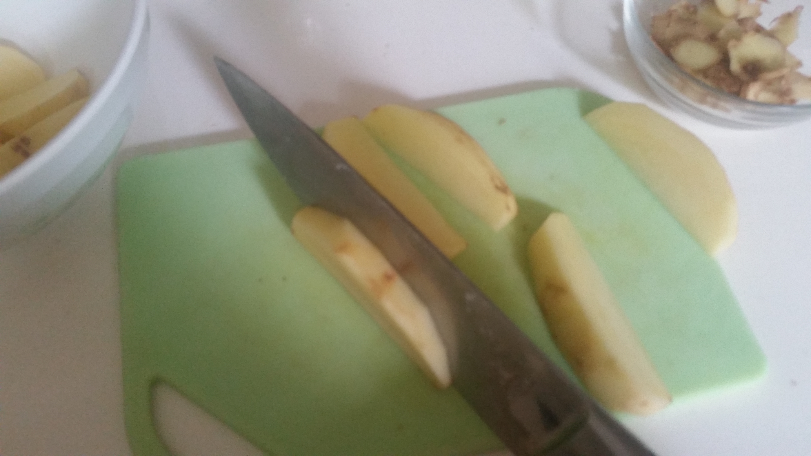
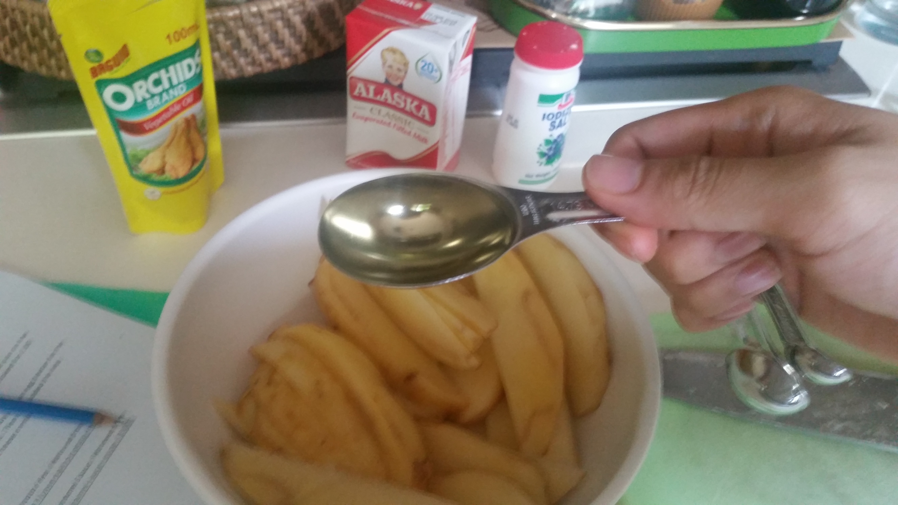
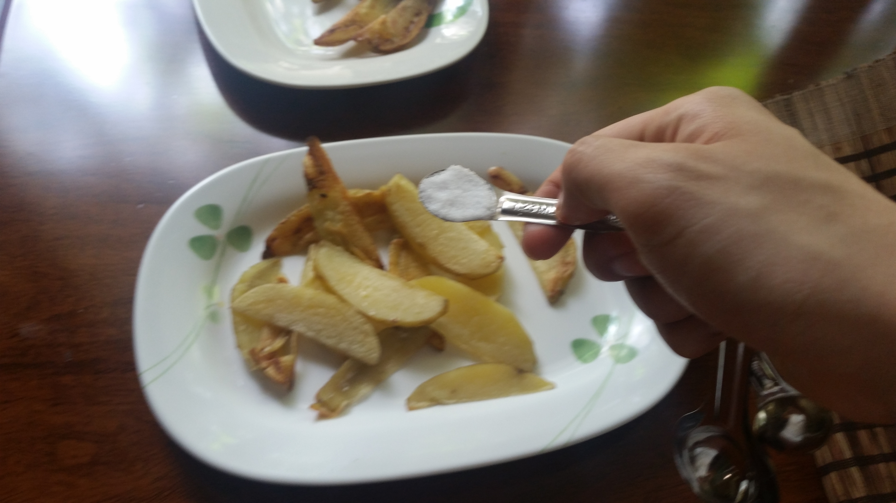
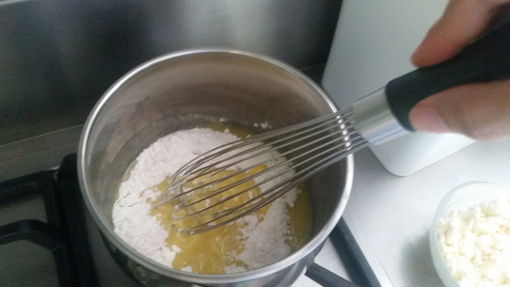

Ingredients
- 524 g regular potatoes
- 1 teaspoon salt
- 5 tablespoon vegetable oil
- 0.240 kg Feta cheese
- 5 tablespoons salted butter (Magnolia Butter)
- 1 cup evaporated milk (Alaska Evaporated Filled Milk)
- ½ cup all-purpose flour (Magnolia All Purpose)
Procedure
- The potatoes were cut into wedges. 
- I drizzled vegetable oil over the wedges. 
- I roasted the potato wedges in 2 batches based on the assigned baking durations under 175 degrees Celsius and there were 15 wedges of potato per batch: .
- Batch #1 – 14:00 minutes
- Batch #2 – 12:00 minutes
- After baking, the potato wedges were placed on tissue paper to drain the oil and seasoned with salt and pepper. 
- For the white cheese sauce, the butter was first melted in a medium sauce pan on low heat. Flour was added ¼ cup at a time to make a roux. The roux was cooked for 2:00 minutes while stirring. 
- Later I added the milk ¼ cup at a time, whisking continuously with an egg beater for the mixture to blend and thicken. Then I last added the feta cheese and continued to stir the mixture until the cheese melted.


Feedback
- Texture: Sauce is really thick and lumpy due to too much flour added
- Taste/Flavor: Batch A was less cooked on the outside due to lack of vegetable oil.
- Appearance: Feta Cheese did not fully melt in the béchamel sauce
Recommendations
- Use Quick Melt Cheese instead of Feta for the cheese sauce
- Use less flour for the cheese sauce
- Grease baking tray with vegetable oil before placing the potato wedges from Batch A.
- Season potato wedges from Batch A, B with pepper asides from salt
- Potatoes should be baked for a certain number of minutes and then flipped over before being baked again.
- Reduce to 3 tablespoons All Purpose Flour
References
- Riches, D. (2018). thespruceEats. Cheesy Bechamel Sauce. Retrieved from https://www.thespruceeats.com/cheesy-bechamel-sauce-recipe-335001
- Denise. (2018). allrecipes. Oven-Baked Potato Fries. Retrieved from https://www.allrecipes.com/recipe/239143/oven-baked-potato-fries/
COPYRIGHT 2018 ALL RIGHTS RESERVED. THE FOODIE CRAFTSMAN. This website is for educational purposes only. CONTACT US Email: thefoodiecraftsman@gmail.com | Tel: +639178151032